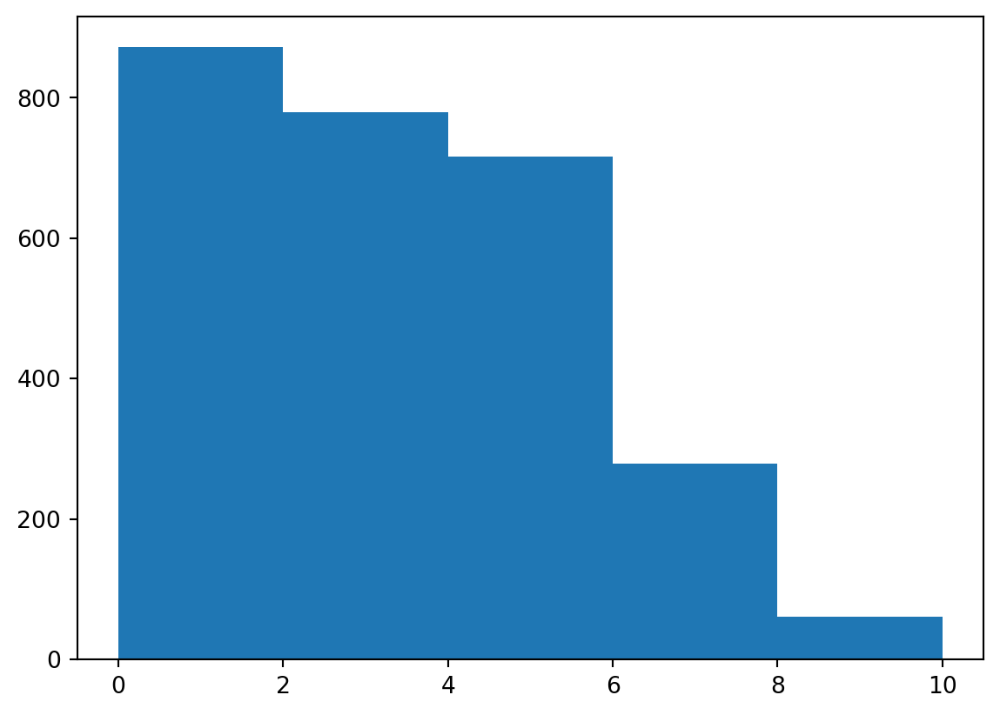

import pandas as pd
# pyreadr is for importing a .RData file
import pyreadr
import numpy as np
import matplotlib.pyplot as pltData Cleaning
Importing Datasets
# importing files
factors_df = pd.read_csv("../Homan_et_al_2017/fae-bpd.csv")
# importing .RData file into Ordered Dict
result_df = pyreadr.read_r("../vonKlipstein_et_al_2021/vonKlipstein2021.RData")# creating df from Ordered Dict
print(result_df.keys())
severity_df = result_df["shareD"]odict_keys(['shareD'])factors_df contains the data about BPD status (have it or not), depression, paranoia, state anxiety, trait anxiety.
severity_df contains the data about BPD severity and subscale symptoms.
Focusing on factors_df
Looking at the Data
# looking at n columns
pd.set_option('display.max_columns', 5)
factors_df.head()| id | run | ... | ttype | fmrimovparam | |
|---|---|---|---|---|---|
| 0 | 101 | 1 | ... | dispositional | 184.050943 |
| 1 | 101 | 1 | ... | dispositional | 184.050943 |
| 2 | 101 | 2 | ... | dispositional | 184.050943 |
| 3 | 101 | 2 | ... | dispositional | 184.050943 |
| 4 | 101 | 1 | ... | situational | 184.050943 |
5 rows × 200 columns
# creating dataset with only necessary columns
f_df = factors_df.filter(['id','run','trial','groupn','group','age','gendern','gender','matchid','paranoia','bdi','stais','stait'], axis=1)# creating list of the column names
#fcolumns = list(f_df.columns)
#fcolumns# examining missing values
print("Missing values distribution: ")
print(f_df.isnull().mean())
print("")Missing values distribution:
id 0.000000
run 0.000000
trial 0.000000
groupn 0.000000
group 0.000000
age 0.000000
gendern 0.000000
gender 0.000000
matchid 0.000000
paranoia 0.147059
bdi 0.264706
stais 0.323529
stait 0.323529
dtype: float64
# checking to see the count after all NaNs are taken out
new_f = f_df.dropna()
print(new_f) id run ... stais stait
192 105 2 ... 46.0 44.0
193 105 2 ... 46.0 44.0
194 105 1 ... 46.0 44.0
195 105 1 ... 46.0 44.0
196 105 1 ... 46.0 44.0
... ... ... ... ... ...
2171 143 2 ... 29.0 23.0
2172 143 1 ... 29.0 23.0
2173 143 1 ... 29.0 23.0
2174 143 2 ... 29.0 23.0
2175 143 2 ... 29.0 23.0
[1344 rows x 13 columns]There is high percentage of missing values for stais and stait at around 32%. The columns paranoia and bdi don’t have as many missing values. The other variables don’t have any missing values which is great.
# checking each column's datatype
print("Column datatypes: ")
print(f_df.dtypes)Column datatypes:
id int64
run int64
trial int64
groupn int64
group object
age int64
gendern int64
gender object
matchid int64
paranoia float64
bdi float64
stais float64
stait float64
dtype: object# listing all the columns with string/mixed type values
str_cols = ['group', 'gender']
# removing leading and trailing characters from columns with str type
for i in str_cols:
f_df[i] = f_df[i].str.strip()# Checking smallest values in columns with NaNs
print("Smallest paranoia value:", np.nanmin(f_df.iloc[:, 9].values))
print("Smallest depression value:", np.nanmin(f_df.iloc[:, 10].values))
print("Smallest state anxiety value:", np.nanmin(f_df.iloc[:, 11].values))
print("Smallest trait anxiety value:", np.nanmin(f_df.iloc[:, 12].values))Smallest paranoia value: 17.0
Smallest depression value: 0.0
Smallest state anxiety value: 20.0
Smallest trait anxiety value: 20.0# Checking largest values in columns with NaNs
print("Largest paranoia value:", np.nanmax(f_df.iloc[:, 9].values))
print("Largest depression value:", np.nanmax(f_df.iloc[:, 10].values))
print("Largest state anxiety value:", np.nanmax(f_df.iloc[:, 11].values))
print("Largest trait anxiety value:", np.nanmax(f_df.iloc[:, 12].values))Largest paranoia value: 54.0
Largest depression value: 37.0
Largest state anxiety value: 64.0
Largest trait anxiety value: 58.0Dealing with Missing Values
# checking the id, group, and gender of rows with NaNs in paranoia column
select_indicesP = list(np.where(f_df.loc[:,"paranoia"].isnull()))[0]
p = f_df.loc[select_indicesP,["id","group","gender"]].drop_duplicates()
p| id | group | gender | |
|---|---|---|---|
| 0 | 101 | HCC | F |
| 64 | 102 | BPD | F |
| 128 | 104 | BPD | F |
| 1088 | 122 | BPD | F |
| 1152 | 125 | HCC | F |
# checking the id, group, and gender of rows with NaNs in bdi column
select_indicesB = list(np.where(f_df.loc[:,"bdi"].isnull()))[0]
b = f_df.loc[select_indicesB,["id","group","gender"]].drop_duplicates()
b| id | group | gender | |
|---|---|---|---|
| 0 | 101 | HCC | F |
| 64 | 102 | BPD | F |
| 512 | 111 | HCC | F |
| 704 | 114 | HCC | F |
| 768 | 116 | HCC | M |
| 896 | 119 | HCC | M |
| 1024 | 121 | HCC | F |
| 1152 | 125 | HCC | F |
| 1984 | 141 | HCC | F |
# checking the id, group, and gender of rows with NaNs in stais column
select_indicesS = list(np.where(f_df.loc[:,"stais"].isnull()))[0]
s = f_df.loc[select_indicesS,["id","group","gender"]].drop_duplicates()
s| id | group | gender | |
|---|---|---|---|
| 0 | 101 | HCC | F |
| 64 | 102 | BPD | F |
| 512 | 111 | HCC | F |
| 704 | 114 | HCC | F |
| 768 | 116 | HCC | M |
| 896 | 119 | HCC | M |
| 1024 | 121 | HCC | F |
| 1152 | 125 | HCC | F |
| 1664 | 136 | HCC | F |
| 1920 | 140 | HCC | M |
| 1984 | 141 | HCC | F |
# checking the id, group, and gender of rows with NaNs in stait column
select_indicesT = list(np.where(f_df.loc[:,"stait"].isnull()))[0]
t = f_df.loc[select_indicesT,["id","group","gender"]].drop_duplicates()
t| id | group | gender | |
|---|---|---|---|
| 0 | 101 | HCC | F |
| 64 | 102 | BPD | F |
| 512 | 111 | HCC | F |
| 704 | 114 | HCC | F |
| 768 | 116 | HCC | M |
| 896 | 119 | HCC | M |
| 1024 | 121 | HCC | F |
| 1152 | 125 | HCC | F |
| 1664 | 136 | HCC | F |
| 1920 | 140 | HCC | M |
| 1984 | 141 | HCC | F |
# checking for common ids in paranoia and bdi columns
common_pb = p.merge(b, on="id")
common_pb| id | group_x | gender_x | group_y | gender_y | |
|---|---|---|---|---|---|
| 0 | 101 | HCC | F | HCC | F |
| 1 | 102 | BPD | F | BPD | F |
| 2 | 125 | HCC | F | HCC | F |
# checking if all ids in stais and stait are the same
print(s.equals(t))True# checking for common ids in bdi and stais columns
common_bs = b.merge(s, on="id")
common_bs| id | group_x | gender_x | group_y | gender_y | |
|---|---|---|---|---|---|
| 0 | 101 | HCC | F | HCC | F |
| 1 | 102 | BPD | F | BPD | F |
| 2 | 111 | HCC | F | HCC | F |
| 3 | 114 | HCC | F | HCC | F |
| 4 | 116 | HCC | M | HCC | M |
| 5 | 119 | HCC | M | HCC | M |
| 6 | 121 | HCC | F | HCC | F |
| 7 | 125 | HCC | F | HCC | F |
| 8 | 141 | HCC | F | HCC | F |
# checking for all common ids among paranoia, bdi, stais, and stait
common = common_pb.merge(s, on="id")
common| id | group_x | ... | group | gender | |
|---|---|---|---|---|---|
| 0 | 101 | HCC | ... | HCC | F |
| 1 | 102 | BPD | ... | BPD | F |
| 2 | 125 | HCC | ... | HCC | F |
3 rows × 7 columns
Now, we know the IDs for rows with NaNs in all four variables of interest. All the IDs with NaNs in the bdi column are also the same in the stais and stait columns.
# Creating a list of the row indices with NaNs
temp = select_indicesP.tolist() + select_indicesB.tolist()
# don't need to add select_indicesT since it equals select_indicesS
NAindices = temp + select_indicesS.tolist()
# getting rid of duplicates
NAindices = [*set(NAindices)]# creating dataset after removing NaNs in paranoia column
fp_df = f_df.drop(
labels=select_indicesP,
axis=0,
inplace=False
)# examining missing values
print("Missing values distribution: ")
print(fp_df.isnull().mean())
print("")Missing values distribution:
id 0.000000
run 0.000000
trial 0.000000
groupn 0.000000
group 0.000000
age 0.000000
gendern 0.000000
gender 0.000000
matchid 0.000000
paranoia 0.000000
bdi 0.206897
stais 0.275862
stait 0.275862
dtype: float64
# creating dataset after removing NaNs in bdi column
fb_df = f_df.drop(
labels=select_indicesB,
axis=0,
inplace=False
)# examining missing values
print("Missing values distribution: ")
print(fb_df.isnull().mean())
print("")Missing values distribution:
id 0.00
run 0.00
trial 0.00
groupn 0.00
group 0.00
age 0.00
gendern 0.00
gender 0.00
matchid 0.00
paranoia 0.08
bdi 0.00
stais 0.08
stait 0.08
dtype: float64
# creating dataset after removing NaNs in stais and stait columns
fst_df = f_df.drop(
labels=select_indicesS,
axis=0,
inplace=False
)# examining missing values
print("Missing values distribution: ")
print(fst_df.isnull().mean())
print("")Missing values distribution:
id 0.000000
run 0.000000
trial 0.000000
groupn 0.000000
group 0.000000
age 0.000000
gendern 0.000000
gender 0.000000
matchid 0.000000
paranoia 0.086957
bdi 0.000000
stais 0.000000
stait 0.000000
dtype: float64
# creating dataset after removing NaNs in all columns
f_cleandf = f_df.drop(
labels=NAindices,
axis=0,
inplace=False
)# examining missing values
print("Missing values distribution: ")
print(f_cleandf.isnull().mean())
print("")Missing values distribution:
id 0.0
run 0.0
trial 0.0
groupn 0.0
group 0.0
age 0.0
gendern 0.0
gender 0.0
matchid 0.0
paranoia 0.0
bdi 0.0
stais 0.0
stait 0.0
dtype: float64
Creating Dataset to Use for Analysis
factors_final_df = f_cleandf.groupby(["id","run"]).agg(id=('id','mean'),run=('run','mean'),groupn=('groupn','mean'),age=('age','mean'),gendern=('gendern','mean'),matchid=('matchid','mean'),paranoiaM=('paranoia','mean'),bdiM=('bdi','mean'),staisM=('stais','mean'),staitM=('stait','mean'))Exporting Datsets
fp_df.to_csv("../Data/FactorsData/paranoia_noNaNs.csv", index=False, header=True)
fb_df.to_csv("../Data/FactorsData/bdi_noNaNs.csv", index=False, header=True)
fst_df.to_csv("../Data/FactorsData/anxiety_noNaNs.csv", index=False, header=True)
f_cleandf.to_csv("../Data/FactorsData/factors_noNaNs.csv", index=False, header=True)
factors_final_df.to_csv("../Data/FactorsData/factors.csv", index=False, header=True)Focusing on severity_df
Looking at the Data
# looking at n columns
pd.set_option('display.max_columns', 5)
severity_df.head()| ID | study | ... | BPDSI9av | BPDSIsum | |
|---|---|---|---|---|---|
| 0 | 1.0 | Giesen-Bloo | ... | 3.125 | 27.152760 |
| 1 | 1.0 | Giesen-Bloo | ... | 4.375 | 32.040530 |
| 2 | 1.0 | Giesen-Bloo | ... | 4.750 | 27.934799 |
| 3 | 1.0 | Giesen-Bloo | ... | 6.000 | 42.004167 |
| 4 | 1.0 | Giesen-Bloo | ... | 4.500 | 37.020238 |
5 rows × 83 columns
severity_df[['ID']]| ID | |
|---|---|
| 0 | 1.0 |
| 1 | 1.0 |
| 2 | 1.0 |
| 3 | 1.0 |
| 4 | 1.0 |
| ... | ... |
| 3666 | 681.0 |
| 3667 | 682.0 |
| 3668 | 682.0 |
| 3669 | 683.0 |
| 3670 | 683.0 |
3671 rows × 1 columns
# creating dataset with only necessary columns
s_df = severity_df.filter(['ID','study','BPDSIsum','BPDSI1av','BPDSI2av','BPDSI3av','BPDSI4av','BPDSI5av','BPDSI6av','BPDSI7av','BPDSI8av','BPDSI9av'], axis=1)# creating list of the column names
#scolumns = list(s_df.columns)
#scolumnslen(s_df.index)3671# examining missing values
print("Missing values distribution: ")
print(s_df.isnull().mean())
print("")Missing values distribution:
ID 0.000000
study 0.000000
BPDSIsum 0.262599
BPDSI1av 0.246799
BPDSI2av 0.255789
BPDSI3av 0.247072
BPDSI4av 0.247344
BPDSI5av 0.247072
BPDSI6av 0.247344
BPDSI7av 0.247072
BPDSI8av 0.247072
BPDSI9av 0.247889
dtype: float64
The ID and study columns have no missing values. The percentage of missing values for all other variables of interest is about the same.
Dealing with Missing Values
# creating new cleaned dataset without missing values
s_temp = s_df.dropna(axis=0)# examining missing values
print("Missing values distribution: ")
print(s_temp.isnull().mean())
print("")Missing values distribution:
ID 0.0
study 0.0
BPDSIsum 0.0
BPDSI1av 0.0
BPDSI2av 0.0
BPDSI3av 0.0
BPDSI4av 0.0
BPDSI5av 0.0
BPDSI6av 0.0
BPDSI7av 0.0
BPDSI8av 0.0
BPDSI9av 0.0
dtype: float64
len(s_temp.index)2707Checking Data Types
# checking each column's datatype
print("Column datatypes: ")
print(s_temp.dtypes)Column datatypes:
ID float64
study category
BPDSIsum float64
BPDSI1av float64
BPDSI2av float64
BPDSI3av float64
BPDSI4av float64
BPDSI5av float64
BPDSI6av float64
BPDSI7av float64
BPDSI8av float64
BPDSI9av float64
dtype: objects_temp['ID'] = s_temp['ID'].astype(int)# checking each column's datatype
print("Column datatypes: ")
print(s_temp.dtypes)Column datatypes:
ID int64
study category
BPDSIsum float64
BPDSI1av float64
BPDSI2av float64
BPDSI3av float64
BPDSI4av float64
BPDSI5av float64
BPDSI6av float64
BPDSI7av float64
BPDSI8av float64
BPDSI9av float64
dtype: objectRenaming Columns
s_temp = s_temp.rename(
columns={
'BPDSI1av':'abandonment',
'BPDSI2av':'interpersonal_relationships',
'BPDSI3av':'identity',
'BPDSI4av':'impulsivity',
'BPDSI5av':'parasuicidal_behavior',
'BPDSI6av':'affective_instability',
'BPDSI7av':'emptiness',
'BPDSI8av':'outbursts_of_anger',
'BPDSI9av':'dissociation_and_paranoid_ideation'
}
,inplace=False
)# creating list of the column names
scolumns = list(s_temp.columns)
scolumns['ID',
'study',
'BPDSIsum',
'abandonment',
'interpersonal_relationships',
'identity',
'impulsivity',
'parasuicidal_behavior',
'affective_instability',
'emptiness',
'outbursts_of_anger',
'dissociation_and_paranoid_ideation']Checking Min/Max Values
Checking Min Values
# Checking the min values
print("Smallest BPDSIsum value:", np.nanmin(s_temp.iloc[:, 2].values))
print("Smallest abandonment value:", np.nanmin(s_temp.iloc[:, 3].values))
print("Smallest interpersonal_relationships value:", np.nanmin(s_temp.iloc[:, 4].values))
print("Smallest identity value:", np.nanmin(s_temp.iloc[:, 5].values))
print("Smallest impulsivity value:", np.nanmin(s_temp.iloc[:, 6].values))
print("Smallest parasuicidal_behavior value:", np.nanmin(s_temp.iloc[:, 7].values))
print("Smallest affective_instability value:", np.nanmin(s_temp.iloc[:, 8].values))
print("Smallest emptiness value:", np.nanmin(s_temp.iloc[:, 9].values))
print("Smallest outbursts_of_anger value:", np.nanmin(s_temp.iloc[:, 10].values))
print("Smallest dissociation_and_paranoid_ideation value:", np.nanmin(s_temp.iloc[:, 11].values))Smallest BPDSIsum value: 0.0
Smallest abandonment value: 0.0
Smallest interpersonal_relationships value: 0.0
Smallest identity value: 0.0
Smallest impulsivity value: 0.0
Smallest parasuicidal_behavior value: 0.0
Smallest affective_instability value: 0.0
Smallest emptiness value: 0.0
Smallest outbursts_of_anger value: 0.0
Smallest dissociation_and_paranoid_ideation value: 0.0This shows something to watch out for when doing analysis. All of the participants of the studies have BPD, so it doesn’t make much sense to have no symptoms or BPD in general. Thus, there may be outliers in the data that can be taken out. This can also be because the participants had lower BPD severity to the point where they can no longer be categorized with BPD (maybe after treatment).
# checking for rows where BPDSIsum = 0
#below_threshold = s_temp.loc[s_temp['BPDSIsum']==0]
#s_cleandf = s_temp.loc[~s_temp['BPDSIsum'].isin(range(16))]
# making sure those values are gone
#check = s_cleandf.loc[s_cleandf['BPDSIsum'].isin(range(16))]
#len(check.index)
# Checking the min values
# print("Smallest BPDSIsum value:", np.nanmin(s_cleandf.iloc[:, 2].values))
# print("Smallest abandonment value:", np.nanmin(s_cleandf.iloc[:, 3].values))
# print("Smallest interpersonal_relationships value:", np.nanmin(s_cleandf.iloc[:, 4].values))
# print("Smallest identity value:", np.nanmin(s_cleandf.iloc[:, 5].values))
# print("Smallest impulsivity value:", np.nanmin(s_cleandf.iloc[:, 6].values))
# print("Smallest parasuicidal_behavior value:", np.nanmin(s_cleandf.iloc[:, 7].values))
# print("Smallest affective_instability value:", np.nanmin(s_cleandf.iloc[:, 8].values))
# print("Smallest emptiness value:", np.nanmin(s_cleandf.iloc[:, 9].values))
# print("Smallest outbursts_of_anger value:", np.nanmin(s_cleandf.iloc[:, 10].values))
# print("Smallest dissociation_and_paranoid_ideation value:", np.nanmin(s_cleandf.iloc[:, 11].values))Checking Max Values
# Checking the max values
print("Largest BPDSIsum value:", np.nanmax(s_temp.iloc[:, 2].values))
print("Largest abandonment value:", np.nanmax(s_temp.iloc[:, 3].values))
print("Largest interpersonal_relationships value:", np.nanmax(s_temp.iloc[:, 4].values))
print("Largest identity value:", np.nanmax(s_temp.iloc[:, 5].values))
print("Largest impulsivity value:", np.nanmax(s_temp.iloc[:, 6].values))
print("Largest parasuicidal_behavior value:", np.nanmax(s_temp.iloc[:, 7].values))
print("Largest affective_instability value:", np.nanmax(s_temp.iloc[:, 8].values))
print("Largest emptiness value:", np.nanmax(s_temp.iloc[:, 9].values))
print("Largest outbursts_of_anger value:", np.nanmax(s_temp.iloc[:, 10].values))
print("Largest dissociation_and_paranoid_ideation value:", np.nanmax(s_temp.iloc[:, 11].values))Largest BPDSIsum value: 69.3085664335664
Largest abandonment value: 10.0
Largest interpersonal_relationships value: 7.75
Largest identity value: 10.0
Largest impulsivity value: 5.45454545454545
Largest parasuicidal_behavior value: 6.61538461538461
Largest affective_instability value: 10.0
Largest emptiness value: 10.0
Largest outbursts_of_anger value: 10.0
Largest dissociation_and_paranoid_ideation value: 10.0The identity column needs to be checked. According to the codebook, the range of values in identity should be from 0 to 4. The other column max values seem okay.
# checking the unusual values in identity column
check = s_temp.loc[s_temp['identity']>4]
# check = severity_df.loc[severity_df['BPDSI3.1']>4]
# check = severity_df.loc[severity_df['BPDSI3.2']>4]
# check = severity_df.loc[severity_df['BPDSI3.3']>4]
# check = severity_df.loc[severity_df['BPDSI3.4']>4]
# check = severity_df.loc[severity_df['BPDSI3.5']>4]
# check = severity_df.loc[severity_df['BPDSI3.6']>4]
# check = severity_df.loc[severity_df['BPDSI3.7']>4]
# check = severity_df.loc[severity_df['BPDSI3.8']>4]
len(check.index)1056plt.hist(s_temp['identity'], bins=5)
#plt.hist(severity_df['BPDSI3.1'], bins=5)
#plt.hist(severity_df['BPDSI3.6'], bins=5)
#plt.hist(severity_df['BPDSI3.3'], bins=5)
plt.show()
After looking at the data and distribution, it seems that the codebook may have been incorrect. The scale for identity appears to be from 0 to 10 just like the other subscale groups. Checked in the original research paper (von Klipstein et al., 2021) and the authors note that all of the subscale groups have a scale from 0 to 10.
Exporting Datset
s_temp.to_csv("../Data/SeverityData/severity_noNaNs.csv", index=False, header=True)